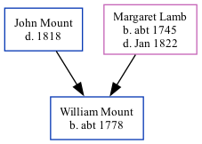

William Mount c1778 -
[ Home ] | [ Calendar ] | [ Surnames Index ] | [ Family History ]The child of John Mount and Margaret Lamb, William Mount, the fifth times great-uncle of <a href="I1.html">Nigel Horne</a>, was born in Kent, England <i>c.</i> 1778<span class="citation">1</span> and baptized in St Nicholas-at-Wade, Kent, England on Oct 11, 1778.
Parents
- Margaret was born c. 1745
Citations
- Kent, England, Tyler Index to Parish Registers, 1538-1874 Online publication - Provo, UT, USA: Ancestry.com Operations, Inc., 2010. This collection was indexed by Ancestry World Archives Project contributors.Original data - Frank Watt Tyler. The Tyler Collection. Canterbury, Kent, England: The Institute of Herald
Family Tree
Generated by Ged2Site. Last updated on Jul 20, 2025